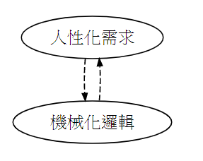

<!DOCTYPE html>
<html>
<head><meta name="generator" content="Hexo 3.8.0">
  <meta charset="utf-8">
  
  <title>軟體開發文件SOP | Mars&#39;s Blog</title>
  <meta name="viewport" content="width=device-width, initial-scale=1, maximum-scale=1">
  <meta name="description" content="軟體開發文件SOP及範本tags: 軟體開發 開發 軟體 文件 SOP  時間：2017-09-11 作者：洪育昇(Mars.Hung) 主題：軟體開發文件SOP及範本   ○、說明為了幫助開發過程中的需求理解及同事間討論，並提高效率、可靠性，在此定義開發文件書寫原則，並提供範本。 一、軟體開發文件(SRS,SDD,STP)書寫原則 文件先行：文件書寫快，程式碼實作慢，利用寫文件的時間想清楚要怎麼">
<meta name="keywords" content="dev,doc,sop">
<meta property="og:type" content="article">
<meta property="og:title" content="軟體開發文件SOP">
<meta property="og:url" content="https://blog.mars-world.net/2017/09/11/dev-doc-sop/index.html">
<meta property="og:site_name" content="Mars&#39;s Blog">
<meta property="og:description" content="軟體開發文件SOP及範本tags: 軟體開發 開發 軟體 文件 SOP  時間：2017-09-11 作者：洪育昇(Mars.Hung) 主題：軟體開發文件SOP及範本   ○、說明為了幫助開發過程中的需求理解及同事間討論，並提高效率、可靠性，在此定義開發文件書寫原則，並提供範本。 一、軟體開發文件(SRS,SDD,STP)書寫原則 文件先行：文件書寫快，程式碼實作慢，利用寫文件的時間想清楚要怎麼">
<meta property="og:locale" content="default">
<meta property="og:image" content="https://blog.mars-world.net/2017/09/11/dev-doc-sop/dev.png">
<meta property="og:updated_time" content="2019-07-30T15:23:44.562Z">
<meta name="twitter:card" content="summary">
<meta name="twitter:title" content="軟體開發文件SOP">
<meta name="twitter:description" content="軟體開發文件SOP及範本tags: 軟體開發 開發 軟體 文件 SOP  時間：2017-09-11 作者：洪育昇(Mars.Hung) 主題：軟體開發文件SOP及範本   ○、說明為了幫助開發過程中的需求理解及同事間討論，並提高效率、可靠性，在此定義開發文件書寫原則，並提供範本。 一、軟體開發文件(SRS,SDD,STP)書寫原則 文件先行：文件書寫快，程式碼實作慢，利用寫文件的時間想清楚要怎麼">
<meta name="twitter:image" content="https://blog.mars-world.net/2017/09/11/dev-doc-sop/dev.png">
  
  
  
    <link href="//fonts.googleapis.com/css?family=Source+Code+Pro" rel="stylesheet" type="text/css">
  

  <link rel="stylesheet" href="https://maxcdn.bootstrapcdn.com/bootstrap/3.3.6/css/bootstrap.min.css" integrity="sha384-1q8mTJOASx8j1Au+a5WDVnPi2lkFfwwEAa8hDDdjZlpLegxhjVME1fgjWPGmkzs7" crossorigin="anonymous">

  <link rel="stylesheet" href="https://maxcdn.bootstrapcdn.com/font-awesome/4.5.0/css/font-awesome.min.css" integrity="sha384-XdYbMnZ/QjLh6iI4ogqCTaIjrFk87ip+ekIjefZch0Y+PvJ8CDYtEs1ipDmPorQ+" crossorigin="anonymous">

  <link rel="stylesheet" href="/css/styles.css">
  

</head>
</html>
<body>
  <nav class="navbar navbar-inverse">
  <div class="container">
    <!-- Brand and toggle get grouped for better mobile display -->
    <div class="navbar-header">
      <button type="button" class="navbar-toggle collapsed" data-toggle="collapse" data-target="#main-menu-navbar" aria-expanded="false">
        <span class="sr-only">Toggle navigation</span>
        <span class="icon-bar"></span>
        <span class="icon-bar"></span>
        <span class="icon-bar"></span>
      </button>
      
    </div>

    <!-- Collect the nav links, forms, and other content for toggling -->
    <div class="collapse navbar-collapse" id="main-menu-navbar">
      <ul class="nav navbar-nav">
        
          <li><a class href="/index.html">Home</a></li>
        
          <li><a class href="/archives/">Archives</a></li>
        
          <li><a class href="https://github.com/marshung24">GitHub</a></li>
        
      </ul>

      <!--
      <ul class="nav navbar-nav navbar-right">
        
      </ul>
      -->
    </div><!-- /.navbar-collapse -->
  </div><!-- /.container-fluid -->
</nav>

  <div class="container">
    <div class="blog-header">
  <h1 class="blog-title">Mars&#39;s Blog</h1>
  
    <p class="lead blog-description">Mars&#39;s learning record</p>
  
</div>

    <div class="row">
        <div class="col-sm-8 blog-main">
          <article id="post-dev-doc-sop" class="article article-type-post" itemscope itemprop="blogPost">

  <header class="article-header">
    
  
    <h1 class="article-title" itemprop="name">
      軟體開發文件SOP
    </h1>
  


  </header>

  <div class="article-meta">
    <div class="article-datetime">
  <a href="/2017/09/11/dev-doc-sop/" class="article-date"><time datetime="2017-09-11T14:53:50.000Z" itemprop="datePublished">2017-09-11</time></a>
</div>

    <div class="article-author">Mars Hung</div>
    
  <div class="article-category">
    <a class="article-category-link" href="/categories/doc/">doc</a>
  </div>


    <div class="article-reading">
  
  <span id="busuanzi_container_page_pv">文章閱讀量<span id="busuanzi_value_page_pv"></span>次</span>
  
</div>

  </div>
  <div class="article-inner">

    <div class="article-entry" itemprop="articleBody">
      
        
<div id="toc">
    <ol class="toc"><li class="toc-item toc-level-1"><a class="toc-link" href="#軟體開發文件SOP及範本"><span class="toc-text">軟體開發文件SOP及範本</span></a><ol class="toc-child"><li class="toc-item toc-level-6"><a class="toc-link" href="#tags-軟體開發-開發-軟體-文件-SOP"><span class="toc-text">tags: 軟體開發 開發 軟體 文件 SOP</span></a></li></ol></li></ol><li class="toc-item toc-level-1"><a class="toc-link" href="#○、說明"><span class="toc-text">○、說明</span></a></li><li class="toc-item toc-level-1"><a class="toc-link" href="#一、軟體開發文件-SRS-SDD-STP-書寫原則"><span class="toc-text">一、軟體開發文件(SRS,SDD,STP)書寫原則</span></a><ol class="toc-child"><li class="toc-item toc-level-2"><a class="toc-link" href="#1-1-理解要做的事-記錄思考過程"><span class="toc-text">1.1 理解要做的事 - 記錄思考過程</span></a></li><li class="toc-item toc-level-2"><a class="toc-link" href="#1-2-要怎麼做-記錄實現流程"><span class="toc-text">1.2 要怎麼做 - 記錄實現流程</span></a></li><li class="toc-item toc-level-2"><a class="toc-link" href="#1-3-記錄人看得懂的資料-交流討論的依據"><span class="toc-text">1.3 記錄人看得懂的資料 - 交流討論的依據</span></a></li><li class="toc-item toc-level-2"><a class="toc-link" href="#1-4-每次思考請限時"><span class="toc-text">1.4 每次思考請限時</span></a></li><li class="toc-item toc-level-2"><a class="toc-link" href="#1-5-思考技巧："><span class="toc-text">1.5 思考技巧：</span></a><ol class="toc-child"><li class="toc-item toc-level-3"><a class="toc-link" href="#1-5-1-思考方向"><span class="toc-text">1.5.1 思考方向</span></a></li><li class="toc-item toc-level-3"><a class="toc-link" href="#1-5-2-深入思考方式"><span class="toc-text">1.5.2 深入思考方式</span></a></li><li class="toc-item toc-level-3"><a class="toc-link" href="#1-5-3-思考焦點："><span class="toc-text">1.5.3 思考焦點：</span></a></li><li class="toc-item toc-level-3"><a class="toc-link" href="#1-5-4-思考角度"><span class="toc-text">1.5.4 思考角度</span></a></li><li class="toc-item toc-level-3"><a class="toc-link" href="#1-5-5-思考深度"><span class="toc-text">1.5.5 思考深度</span></a></li></ol></li><li class="toc-item toc-level-2"><a class="toc-link" href="#1-6-設計圖、範例圖、參考圖"><span class="toc-text">1.6 設計圖、範例圖、參考圖</span></a><ol class="toc-child"><li class="toc-item toc-level-3"><a class="toc-link" href="#1-6-1-設計圖種類-擇用"><span class="toc-text">1.6.1 設計圖種類 (擇用)</span></a></li><li class="toc-item toc-level-3"><a class="toc-link" href="#1-6-2-設計圖作法"><span class="toc-text">1.6.2 設計圖作法</span></a><ol class="toc-child"><li class="toc-item toc-level-4"><a class="toc-link" href="#HackMD圖表功能"><span class="toc-text">HackMD圖表功能</span></a></li><li class="toc-item toc-level-4"><a class="toc-link" href="#軟體繪圖"><span class="toc-text">軟體繪圖</span></a></li><li class="toc-item toc-level-4"><a class="toc-link" href="#螢幕截圖"><span class="toc-text">螢幕截圖</span></a></li><li class="toc-item toc-level-4"><a class="toc-link" href="#手繪圖-拍照上傳"><span class="toc-text">手繪圖+拍照上傳</span></a></li><li class="toc-item toc-level-4"><a class="toc-link" href="#文字敘述"><span class="toc-text">文字敘述</span></a></li></ol></li></ol></li></ol></li><li class="toc-item toc-level-1"><a class="toc-link" href="#二、範本"><span class="toc-text">二、範本</span></a></li><li class="toc-item toc-level-1"><a class="toc-link" href="#三、Log"><span class="toc-text">三、Log</span></a></li>
</div>

        <h1 id="軟體開發文件SOP及範本"><a href="#軟體開發文件SOP及範本" class="headerlink" title="軟體開發文件SOP及範本"></a>軟體開發文件SOP及範本</h1><h6 id="tags-軟體開發-開發-軟體-文件-SOP"><a href="#tags-軟體開發-開發-軟體-文件-SOP" class="headerlink" title="tags: 軟體開發 開發 軟體 文件 SOP"></a>tags: <code>軟體開發</code> <code>開發</code> <code>軟體</code> <code>文件</code> <code>SOP</code></h6><blockquote>
<ul>
<li>時間：2017-09-11</li>
<li>作者：洪育昇(Mars.Hung)</li>
<li>主題：軟體開發文件SOP及範本</li>
</ul>
</blockquote>
<h1 id="○、說明"><a href="#○、說明" class="headerlink" title="○、說明"></a>○、說明</h1><p>為了幫助開發過程中的需求理解及同事間討論，並提高效率、可靠性，在此定義開發文件書寫原則，並提供範本。</p>
<h1 id="一、軟體開發文件-SRS-SDD-STP-書寫原則"><a href="#一、軟體開發文件-SRS-SDD-STP-書寫原則" class="headerlink" title="一、軟體開發文件(SRS,SDD,STP)書寫原則"></a>一、軟體開發文件(SRS,SDD,STP)書寫原則</h1><ul>
<li>文件先行：文件書寫快，程式碼實作慢，利用寫文件的時間想清楚要怎麼實作。</li>
<li>同步更新：文件、程式內容不符是很糟糕的事。</li>
</ul>
<blockquote>
<ul>
<li>思維整理</li>
<li>條理化、具體化</li>
<li>交流標的</li>
</ul>
</blockquote>
<h2 id="1-1-理解要做的事-記錄思考過程"><a href="#1-1-理解要做的事-記錄思考過程" class="headerlink" title="1.1 理解要做的事 - 記錄思考過程"></a>1.1 理解要做的事 - 記錄思考過程</h2><ul>
<li>需求閱讀：記錄對PM規畫文件的理解、及轉化為Detail程式設計的思路。</li>
<li>需求分析：人不可能看到需求就直過Print出程式碼而沒有思考過程的，文件是思考過程的具體化。</li>
<li>討論依據：文件是記錄理解的過程、思考的過程，是反思、討論、交流的依據。</li>
</ul>
<blockquote>
<ul>
<li>別期待工程師有一張業務般靈巧的嘴。</li>
<li>片面的交流有可能是雞同鴨講，但文件化的規則整理和思路過程讓大部份問題明白程現。</li>
<li>在記憶力上金頭腦比不上爛筆頭。</li>
<li>期待聰明的頭腦不如培養個有智慧的習慣。</li>
<li>一步一腳印，記錄下思路過程，可見証自我的成長。</li>
</ul>
</blockquote>
<h2 id="1-2-要怎麼做-記錄實現流程"><a href="#1-2-要怎麼做-記錄實現流程" class="headerlink" title="1.2 要怎麼做 - 記錄實現流程"></a>1.2 要怎麼做 - 記錄實現流程</h2><ul>
<li>層次：程式設計是 <strong><em>人性面的需求</em></strong> 跟 <strong><em>機械面邏輯</em></strong> 的溝通過程。</li>
<li>變動：可能要Debug、需求變更、重構、優化，是需要反復作業，甚至修改的。</li>
<li>記錄：文件是開發過程中輔助思考及N年後優化時輔助記憶的好幫手。</li>
</ul>
<blockquote>
<ul>
<li>交流討論必需有依據才有焦點、才有效率。</li>
<li>對開發瑣事與期頻繁的集合開會，不如隨筆記錄文件的交流，起碼可以多人隨時隨地的查閱。</li>
<li>使用推衍流程具體化，不但攤開大部份問題，而且產品經理、程序員、業務都看得懂，可參與檢視。</li>
</ul>
</blockquote>
<h2 id="1-3-記錄人看得懂的資料-交流討論的依據"><a href="#1-3-記錄人看得懂的資料-交流討論的依據" class="headerlink" title="1.3 記錄人看得懂的資料 - 交流討論的依據"></a>1.3 記錄人看得懂的資料 - 交流討論的依據</h2><ul>
<li>說明: 本次專案執原因/目標/發展性</li>
<li>需求: 需求來源及需求分析</li>
<li>案例: 假設情境，並推衍使用過程</li>
<li>步驟: 實現步驟</li>
<li>畫面: 功能畫面</li>
<li>邏輯: 實現過程的業務邏輯</li>
<li>定義: 各種規則</li>
<li>資料: 資料格式、交換格式、抽像類別、介面類別</li>
<li>圖表: 各式建構圖表、物件關系圖</li>
<li>測試: 條列化測試內容，以確保產品品質</li>
<li>範例: 使用範例</li>
</ul>
<h2 id="1-4-每次思考請限時"><a href="#1-4-每次思考請限時" class="headerlink" title="1.4 每次思考請限時"></a>1.4 每次思考請限時</h2><ul>
<li>思路卡住就去做別的事，換個想法，別浪費時間。</li>
<li>大案文件大，小案文件小，沒東西寫就別硬擠了。</li>
</ul>
<blockquote>
<p>重點 : 每次思考請限時…… 每次思考請限時…… 每次思考請限時…… </p>
</blockquote>
<h2 id="1-5-思考技巧："><a href="#1-5-思考技巧：" class="headerlink" title="1.5 思考技巧："></a>1.5 思考技巧：</h2><h3 id="1-5-1-思考方向"><a href="#1-5-1-思考方向" class="headerlink" title="1.5.1 思考方向"></a>1.5.1 思考方向</h3><ul>
<li>從 <strong><em>人性化需求面</em></strong> 出發，向 <strong><em>機械化邏輯面</em></strong> 使用不同角度、不同深度分析</li>
</ul>
<p></p>
<h3 id="1-5-2-深入思考方式"><a href="#1-5-2-深入思考方式" class="headerlink" title="1.5.2 深入思考方式"></a>1.5.2 深入思考方式</h3><ul>
<li>漸進式：從 明顯、抽像化概念 一層一層向 底層、具體化實作 前進<ul>
<li>Level-1 : [使用者面] 使用者 操作頁面,動作流程,I/O(Email,上傳,下載…)</li>
<li>Level-2 : [程式面] Level-1 過程細化動作 - 資源、產出物、節點/轉折點、流程、資料交換、狀態變化</li>
<li>Level-3 : [資料面] 各 變數/資源/資料庫/檔案 的 I/O、資料轉換、資料對應</li>
</ul>
</li>
</ul>
<blockquote>
<ul>
<li>層次間的關系：上層如同問題，下層如同解答/闡敘，每一個問題都要的對應的解答。</li>
<li>如果專案較小，可以省掉部份項目，改用文字敘述方式解答。</li>
</ul>
</blockquote>
<h3 id="1-5-3-思考焦點："><a href="#1-5-3-思考焦點：" class="headerlink" title="1.5.3 思考焦點："></a>1.5.3 思考焦點：</h3><ul>
<li>Level-1 : 資源(Resource)、產出物(Product)。 (二個推衍方向)</li>
<li>Level-2 : 節點/轉折點(node)、流程(Flow)。</li>
<li>Level-3 : 資料交換、資料結構、狀態變化(state)。</li>
</ul>
<blockquote>
<ul>
<li>功能動作是推衍的最小單位；物件是實作的最小單位。</li>
<li>文件中的推論都是承上啟下的。</li>
<li>無法推衍下去的通常是問題點。</li>
</ul>
</blockquote>
<h3 id="1-5-4-思考角度"><a href="#1-5-4-思考角度" class="headerlink" title="1.5.4 思考角度"></a>1.5.4 思考角度</h3><ul>
<li>角度可能有：資料收集 <strong><em>(擇要取用)</em></strong><ul>
<li>目標說明 : 說明為什麼要這麼做</li>
<li>需求收集 : 需要做些什麼</li>
<li>案例收集 : 哪些狀況下要這些需求。 <strong><em>[UML使用個案圖]</em></strong></li>
<li>功能產出(I/O)列表 : 需求的具體化，依照哪些資訊，產出哪些東西</li>
<li>使用頁面 : 可能要用哪些頁面達成</li>
<li>欄位收集 : 可能用到的表單欄位、流程控制參數、資料庫狀態欄位</li>
<li>可能函式 : 可能可以動作化、步驟化、方法化的工作，並命名<ul>
<li>職責(目的)相似的函式，可以集合成類別(物件)</li>
<li>不同物件間相似的函式，可以設計成界面</li>
<li>有衍生關係的類別(物件)，可以設計成抽像類別(物件)</li>
</ul>
</li>
<li>測試標的 : 需求要如何測式、頁面的動態測試項目</li>
</ul>
</li>
</ul>
<blockquote>
<ul>
<li>思考角度間的關系：前項如同問題，後項如同解答/闡敘，每一個問題都要的對應的解答。</li>
<li>如果專案較小，可以省掉部份項目，改用文字敘述方式解答。</li>
</ul>
</blockquote>
<h3 id="1-5-5-思考深度"><a href="#1-5-5-思考深度" class="headerlink" title="1.5.5 思考深度"></a>1.5.5 思考深度</h3><ul>
<li>深度可能有：資料分析 <strong><em>(擇要取用)</em></strong><ul>
<li>需求分析 : 哪些需求可以結合；哪些可以細化；哪些要捨去</li>
<li>案例分析 : (人事時地物) 狀況 =&gt; 需求 =&gt; 產生 =&gt; 狀況 =&gt; 需求 =&gt; ….. =&gt; 結束</li>
<li>流程分析 : 功能處理資訊流程、狀態變更、資料產出。 <strong><em>[流程圖]</em></strong> <strong><em>[UML活動圖]</em></strong> <strong><em>[UML狀態圖]</em></strong> <strong><em>[UML時序圖]</em></strong></li>
<li>頁面分析 : 依照案例分析、流程分析，哪些東西可以結合成一個頁面</li>
<li>資料庫設計 : 依收集的欄位試建資料庫。 <strong><em>[Database Schema]</em></strong> <strong><em>[E-R圖]</em></strong></li>
<li>資料格式分析 : <ul>
<li>流程確定，可定義 流程控制參數、資料交換格式。</li>
<li>資料欄位確定，可定義 物件資料格式。</li>
</ul>
</li>
<li>函式設計 : 依收集的函式試建 物件、介面、類別。 <strong><em>[UML類別圖]</em></strong> <strong><em>[UML物件圖]</em></strong> <strong><em>[UML組件圖]</em></strong></li>
<li>細化測試項目 : 條列化、表格化，需確定 需求、案例、動態頁面 都有被測到。</li>
</ul>
</li>
</ul>
<blockquote>
<ul>
<li>思考角度、思考深度的關系：思考角度如同問題，思考深度如同解答/闡敘，每一個問題都要的對應的解答。</li>
<li>思考深度間的關系：前項如同問題，後項如同解答/闡敘，每一個問題都要的對應的解答。</li>
<li>如果專案較小，可以省掉部份項目，改用文字敘述方式解答。</li>
</ul>
</blockquote>
<h2 id="1-6-設計圖、範例圖、參考圖"><a href="#1-6-設計圖、範例圖、參考圖" class="headerlink" title="1.6 設計圖、範例圖、參考圖"></a>1.6 設計圖、範例圖、參考圖</h2><h3 id="1-6-1-設計圖種類-擇用"><a href="#1-6-1-設計圖種類-擇用" class="headerlink" title="1.6.1 設計圖種類 (擇用)"></a>1.6.1 設計圖種類 (擇用)</h3><ul>
<li>流程圖</li>
<li>E-R圖</li>
<li>甘特圖</li>
<li>Database Schema</li>
<li>UML使用個案圖</li>
<li>UML活動圖</li>
<li>UML狀態圖</li>
<li>UML時序圖</li>
<li>UML類別圖</li>
<li>UML物件圖</li>
<li>UML組件圖</li>
<li>泳道流程圖</li>
</ul>
<h3 id="1-6-2-設計圖作法"><a href="#1-6-2-設計圖作法" class="headerlink" title="1.6.2 設計圖作法"></a>1.6.2 設計圖作法</h3><ul>
<li>Wireframe: 靜態的「線框稿」</li>
<li>Mockup: 靜態的「視覺稿」</li>
<li>Prototype: 可操作的「原型」</li>
</ul>
<blockquote>
<p>※ <a href="https://blog.akanelee.me/posts/276909-beginners-of-prototype/" target="_blank" rel="noopener">設計圖 Prototype Mockup Wireframe 的差異</a></p>
</blockquote>
<h4 id="HackMD圖表功能"><a href="#HackMD圖表功能" class="headerlink" title="HackMD圖表功能"></a>HackMD圖表功能</h4><ul>
<li>使用本服務圖表功能繪圖</li>
</ul>
<h4 id="軟體繪圖"><a href="#軟體繪圖" class="headerlink" title="軟體繪圖"></a>軟體繪圖</h4><ul>
<li>使用繪圖軟體畫完圖後貼到文件中輔助說明</li>
</ul>
<h4 id="螢幕截圖"><a href="#螢幕截圖" class="headerlink" title="螢幕截圖"></a>螢幕截圖</h4><ul>
<li>可直接從螢幕截取圖片貼到文件中輔助說明</li>
</ul>
<h4 id="手繪圖-拍照上傳"><a href="#手繪圖-拍照上傳" class="headerlink" title="手繪圖+拍照上傳"></a>手繪圖+拍照上傳</h4><ul>
<li>可將紙上繪圖、開會的白板中的文字，圖表拍照後貼到文件中輔助說明</li>
</ul>
<h4 id="文字敘述"><a href="#文字敘述" class="headerlink" title="文字敘述"></a>文字敘述</h4><ul>
<li>部份圖表(如 流程圖)也可以使用文字敘述表示，如：<br>點選編輯 =&gt; [View]顯示編輯彈窗 =&gt; [View-Ajax+Ctrller]載入預設資料Request+Response =&gt; [View]前端資料驗證 =&gt; [View-Ajax]送出資料Request =&gt; [Ctrller]處理&amp;回傳結果 =&gt; [View-AjaxResp]更新訊息 =&gt; 完成編輯</li>
</ul>
<blockquote>
<ul>
<li>我們需要文件來當 <strong><em>反思</em></strong>、<strong><em>交接</em></strong>、<strong><em>討論</em></strong>、<strong><em>重構</em></strong> 的依據，只需 快速、示意 即可，不需正式、嚴僅、精美。</li>
<li>SDD文件是程式設計過程的具體化，不應憑空想像。</li>
<li>不要貼一堆Detail的程式碼上來。</li>
<li>每次思考請限時</li>
</ul>
</blockquote>
<h1 id="二、範本"><a href="#二、範本" class="headerlink" title="二、範本"></a>二、範本</h1><ul>
<li><a href="/2017/09/11/dev-doc-sop-sample/">軟體開發文件(SRS,SDD,STP)範本</a></li>
</ul>
<h1 id="三、Log"><a href="#三、Log" class="headerlink" title="三、Log"></a>三、Log</h1><ul>
<li>2017-09: Mars Hung編寫於HackMD</li>
<li>2017-10: Mars Hung初版</li>
<li>2018-05: Mars Hung修訂</li>
<li>2019-07-30: Mars Hung重製成md檔</li>
</ul>

      
    </div>

    
      

    

    <footer class="article-footer">
      <a data-url="https://blog.mars-world.net/2017/09/11/dev-doc-sop/" data-id="ck24vtyfz004busufp14lh9a3" class="article-share-link">
        <i class="fa fa-share"></i> Share
      </a>
      
      
  <ul class="article-tag-list"><li class="article-tag-list-item"><a class="article-tag-list-link" href="/tags/dev/">dev</a></li><li class="article-tag-list-item"><a class="article-tag-list-link" href="/tags/doc/">doc</a></li><li class="article-tag-list-item"><a class="article-tag-list-link" href="/tags/sop/">sop</a></li></ul>


    </footer>
  </div>
  
    
<ul id="article-nav" class="nav nav-pills nav-justified">
  
  
  <li role="presentation">
    <a href="/2017/09/11/dev-doc-sop-sample/" id="article-nav-newer" class="article-nav-link-wrap">
      <span class="article-nav-link-title">軟體開發文件SOP範本</span>
      <i class="fa fa-chevron-right pull-right"></i>
    </a>
  </li>
  
</ul>


  
</article>


        </div>
        <div class="col-sm-3 col-sm-offset-1 blog-sidebar">
          
  
  <div class="sidebar-module">
    <h4>Recents</h4>
    <ul class="sidebar-module-list">
      
        <li>
          <a href="/2019/08/18/crud-design-04/">CRUD表單設計 Day-04 Javascript</a>
        </li>
      
        <li>
          <a href="/2019/08/17/crud-design-03/">CRUD表單設計 Day-03 安裝Bootstrap4</a>
        </li>
      
        <li>
          <a href="/2019/08/16/php-training/">PHP培訓-CRUD</a>
        </li>
      
        <li>
          <a href="/2019/08/16/crud-design-02/">CRUD表單設計 Day-02 安裝PHP Framework</a>
        </li>
      
        <li>
          <a href="/2019/07/24/account-security-setting/">帳號安全設定</a>
        </li>
      
    </ul>
  </div>


  
  <div class="sidebar-module">
    <h4>Archives</h4>
    <ul class="sidebar-module-list"><li class="sidebar-module-list-item"><a class="sidebar-module-list-link" href="/archives/2019/08/">August 2019</a><span class="sidebar-module-list-count">4</span></li><li class="sidebar-module-list-item"><a class="sidebar-module-list-link" href="/archives/2019/07/">July 2019</a><span class="sidebar-module-list-count">6</span></li><li class="sidebar-module-list-item"><a class="sidebar-module-list-link" href="/archives/2019/06/">June 2019</a><span class="sidebar-module-list-count">1</span></li><li class="sidebar-module-list-item"><a class="sidebar-module-list-link" href="/archives/2019/05/">May 2019</a><span class="sidebar-module-list-count">4</span></li><li class="sidebar-module-list-item"><a class="sidebar-module-list-link" href="/archives/2019/04/">April 2019</a><span class="sidebar-module-list-count">2</span></li><li class="sidebar-module-list-item"><a class="sidebar-module-list-link" href="/archives/2017/09/">September 2017</a><span class="sidebar-module-list-count">2</span></li></ul>
  </div>


  
  <div class="sidebar-module">
    <h4>Categories</h4>
    <ul class="sidebar-module-list"><li class="sidebar-module-list-item"><a class="sidebar-module-list-link" href="/categories/doc/">doc</a><span class="sidebar-module-list-count">2</span></li><li class="sidebar-module-list-item"><a class="sidebar-module-list-link" href="/categories/info/">info</a><span class="sidebar-module-list-count">3</span></li><li class="sidebar-module-list-item"><a class="sidebar-module-list-link" href="/categories/security/">security</a><span class="sidebar-module-list-count">1</span></li><li class="sidebar-module-list-item"><a class="sidebar-module-list-link" href="/categories/server/">server</a><span class="sidebar-module-list-count">1</span></li><li class="sidebar-module-list-item"><a class="sidebar-module-list-link" href="/categories/test/">test</a><span class="sidebar-module-list-count">1</span></li><li class="sidebar-module-list-item"><a class="sidebar-module-list-link" href="/categories/tools/">tools</a><span class="sidebar-module-list-count">5</span></li><li class="sidebar-module-list-item"><a class="sidebar-module-list-link" href="/categories/training/">training</a><span class="sidebar-module-list-count">5</span></li><li class="sidebar-module-list-item"><a class="sidebar-module-list-link" href="/categories/web/">web</a><span class="sidebar-module-list-count">1</span></li></ul>
  </div>


  
  <div class="sidebar-module">
    <h4>Tags</h4>
    <ul class="sidebar-module-list"><li class="sidebar-module-list-item"><a class="sidebar-module-list-link" href="/tags/account/">account</a><span class="sidebar-module-list-count">1</span></li><li class="sidebar-module-list-item"><a class="sidebar-module-list-link" href="/tags/ajax/">ajax</a><span class="sidebar-module-list-count">1</span></li><li class="sidebar-module-list-item"><a class="sidebar-module-list-link" href="/tags/blog/">blog</a><span class="sidebar-module-list-count">1</span></li><li class="sidebar-module-list-item"><a class="sidebar-module-list-link" href="/tags/bootstrap/">bootstrap</a><span class="sidebar-module-list-count">1</span></li><li class="sidebar-module-list-item"><a class="sidebar-module-list-link" href="/tags/codeingiter/">codeingiter</a><span class="sidebar-module-list-count">1</span></li><li class="sidebar-module-list-item"><a class="sidebar-module-list-link" href="/tags/coding/">coding</a><span class="sidebar-module-list-count">5</span></li><li class="sidebar-module-list-item"><a class="sidebar-module-list-link" href="/tags/composer/">composer</a><span class="sidebar-module-list-count">1</span></li><li class="sidebar-module-list-item"><a class="sidebar-module-list-link" href="/tags/debug/">debug</a><span class="sidebar-module-list-count">1</span></li><li class="sidebar-module-list-item"><a class="sidebar-module-list-link" href="/tags/dev/">dev</a><span class="sidebar-module-list-count">17</span></li><li class="sidebar-module-list-item"><a class="sidebar-module-list-link" href="/tags/doc/">doc</a><span class="sidebar-module-list-count">3</span></li><li class="sidebar-module-list-item"><a class="sidebar-module-list-link" href="/tags/env/">env</a><span class="sidebar-module-list-count">1</span></li><li class="sidebar-module-list-item"><a class="sidebar-module-list-link" href="/tags/git/">git</a><span class="sidebar-module-list-count">2</span></li><li class="sidebar-module-list-item"><a class="sidebar-module-list-link" href="/tags/github/">github</a><span class="sidebar-module-list-count">1</span></li><li class="sidebar-module-list-item"><a class="sidebar-module-list-link" href="/tags/hexo/">hexo</a><span class="sidebar-module-list-count">1</span></li><li class="sidebar-module-list-item"><a class="sidebar-module-list-link" href="/tags/ide/">ide</a><span class="sidebar-module-list-count">1</span></li><li class="sidebar-module-list-item"><a class="sidebar-module-list-link" href="/tags/info/">info</a><span class="sidebar-module-list-count">3</span></li><li class="sidebar-module-list-item"><a class="sidebar-module-list-link" href="/tags/javascript/">javascript</a><span class="sidebar-module-list-count">2</span></li><li class="sidebar-module-list-item"><a class="sidebar-module-list-link" href="/tags/jquery/">jquery</a><span class="sidebar-module-list-count">1</span></li><li class="sidebar-module-list-item"><a class="sidebar-module-list-link" href="/tags/linux/">linux</a><span class="sidebar-module-list-count">2</span></li><li class="sidebar-module-list-item"><a class="sidebar-module-list-link" href="/tags/mysql/">mysql</a><span class="sidebar-module-list-count">1</span></li><li class="sidebar-module-list-item"><a class="sidebar-module-list-link" href="/tags/nginx/">nginx</a><span class="sidebar-module-list-count">2</span></li><li class="sidebar-module-list-item"><a class="sidebar-module-list-link" href="/tags/nodejs/">nodejs</a><span class="sidebar-module-list-count">1</span></li><li class="sidebar-module-list-item"><a class="sidebar-module-list-link" href="/tags/php/">php</a><span class="sidebar-module-list-count">8</span></li><li class="sidebar-module-list-item"><a class="sidebar-module-list-link" href="/tags/phpunit/">phpunit</a><span class="sidebar-module-list-count">1</span></li><li class="sidebar-module-list-item"><a class="sidebar-module-list-link" href="/tags/security/">security</a><span class="sidebar-module-list-count">1</span></li><li class="sidebar-module-list-item"><a class="sidebar-module-list-link" href="/tags/server/">server</a><span class="sidebar-module-list-count">1</span></li><li class="sidebar-module-list-item"><a class="sidebar-module-list-link" href="/tags/setting/">setting</a><span class="sidebar-module-list-count">1</span></li><li class="sidebar-module-list-item"><a class="sidebar-module-list-link" href="/tags/sop/">sop</a><span class="sidebar-module-list-count">2</span></li><li class="sidebar-module-list-item"><a class="sidebar-module-list-link" href="/tags/standard/">standard</a><span class="sidebar-module-list-count">2</span></li><li class="sidebar-module-list-item"><a class="sidebar-module-list-link" href="/tags/style/">style</a><span class="sidebar-module-list-count">1</span></li><li class="sidebar-module-list-item"><a class="sidebar-module-list-link" href="/tags/test/">test</a><span class="sidebar-module-list-count">2</span></li><li class="sidebar-module-list-item"><a class="sidebar-module-list-link" href="/tags/tools/">tools</a><span class="sidebar-module-list-count">5</span></li><li class="sidebar-module-list-item"><a class="sidebar-module-list-link" href="/tags/trace/">trace</a><span class="sidebar-module-list-count">1</span></li><li class="sidebar-module-list-item"><a class="sidebar-module-list-link" href="/tags/training/">training</a><span class="sidebar-module-list-count">5</span></li><li class="sidebar-module-list-item"><a class="sidebar-module-list-link" href="/tags/unit-test/">unit test</a><span class="sidebar-module-list-count">1</span></li><li class="sidebar-module-list-item"><a class="sidebar-module-list-link" href="/tags/vscode/">vscode</a><span class="sidebar-module-list-count">1</span></li><li class="sidebar-module-list-item"><a class="sidebar-module-list-link" href="/tags/web/">web</a><span class="sidebar-module-list-count">7</span></li></ul>
  </div>


        </div>
    </div>
  </div>
  <footer class="blog-footer">
  <div class="container">
    <div id="footer-info" class="inner">
      &copy; 2019 Mars Hung Powered by <a href="http://hexo.io/" target="_blank">Hexo</a>
    </div>
  
  
    <script async src="//busuanzi.ibruce.info/busuanzi/2.3/busuanzi.pure.mini.js"></script>
    <span id="busuanzi_container_site_pv">總訪問量<span id="busuanzi_value_site_pv"></span>次</span>
    <span class="post-meta-divider">|</span>
    <span id="busuanzi_container_site_uv">訪客數<span id="busuanzi_value_site_uv"></span>人</span>
  
  </div>
</footer>

  

<script src="https://ajax.googleapis.com/ajax/libs/jquery/2.1.4/jquery.min.js" integrity="sha384-8gBf6Y4YYq7Jx97PIqmTwLPin4hxIzQw5aDmUg/DDhul9fFpbbLcLh3nTIIDJKhx" crossorigin="anonymous"></script>

<script src="https://maxcdn.bootstrapcdn.com/bootstrap/3.3.6/js/bootstrap.min.js" integrity="sha384-0mSbJDEHialfmuBBQP6A4Qrprq5OVfW37PRR3j5ELqxss1yVqOtnepnHVP9aJ7xS" crossorigin="anonymous"></script>


<script src="/js/script.js"></script>

</body>
</html>
